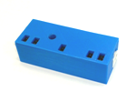

Lijnvolger© 2018, ProtoIt Platform: INFENTO |  |
Beschrijving:
De lijnvolger bestaat uit 5 infrarode LED´s met bijbehorende sensor om het weerkaatste licht op te vangen.
De LED´s bevinden zich precies in het midden en aan weerszijden op 2,5 cm en 4,5 cm vanuit het midden.
Daarmee is de sensor geschikt om een lijn van 5 cm breedte (de breedte van ducktap, gaffertape en schilderstape)
te volgen.
Onderdelen:
Lijnvolger
| Adres | I2C-adres van de driver.Standaard op adres 11 ingesteld. |
| Helderheid lijn (%) | Relatieve helderheid van de lijn, waarbij 0% volledig donker en 100% volledig licht betekent.Standaard op 30% ingesteld. |
| Helderheid lijn (%) | Relatieve helderheid van de grond, waarbij 0% volledig donker en 100% volledig licht betekent.Standaard op 70% ingesteld. |
| Positie | De bit-gewijze optelling van de sensoren die de lijn waarnemen. Van links naar rechts hebben de sensoren een bit-waarde van 1, 2, 4, 8 en 16. |
| Ver links | De uiterst linkse sensor neemt de lijn waar. |
| Links | De sensor links naast het midden neemt de lijn waar. |
| Midden | De middelste sensor neemt de lijn waar. |
| Rechts | De sensor rechts naast het midden neemt de lijn waar. |
| Ver rechts | De uiterst rechtse sensor neemt de lijn waar. |
| Op de lijn | Dit signaal wordt uitgezonden als één van de sensoren de lijn waarneemt. |
| Naast de lijn | Dit signaal wordt uitgezonden als geen van de sensoren de lijn waarneemt. |